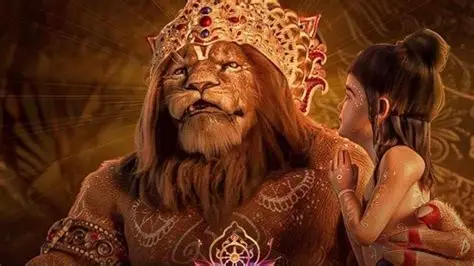
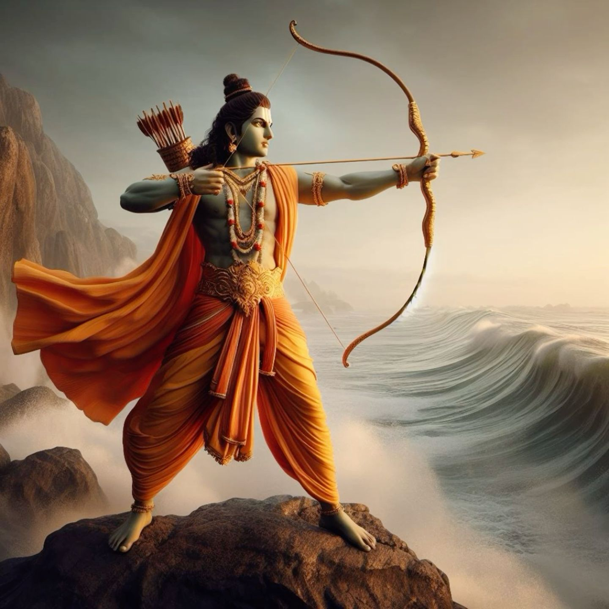

Narasimha, whose name combines the Sanskrit words Nara (man) and Simha (lion), is revered in Hinduism as a powerful and protective deity.
He is the fourth of Vishnu’s ten principal avatars (Dashavatara) and is uniquely depicted with a human torso and a lion’s head, symbolizing both intellect and raw strength

Rama also known as Ramachandra, was born in Ayodhya to King Dasharatha and Queen Kaushalya during the Treta Yuga, following a sacred yajna performed to obtain heirs . He was sent by Vishnu to restore cosmic balance and defeat the demon king Ravana, who had cast fear across the three worlds . Rama’s birth was divine: a pot of nectar given to Dasharatha was shared with Kausalya, resulting in Rama’s half-divine nature